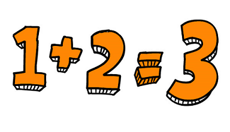
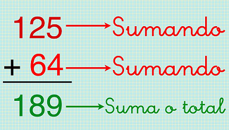
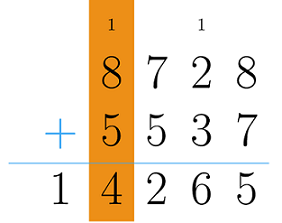

La suma, también llamada adición es una operación matemática básica perteneciente a la aritmética de los números naturales, racionales, enteros, complejos y reales.
Es representada por el signo “+”, este consiste en añadir o combinar dos o más números a fin de conseguir una cantidad final. La adición también representa el proceso de unir dos colecciones de objetos para conseguir una sola colección.
Las partes en las que se divide la suma son:
Sumandos: Son todos los números que intervienen en la adición. En una operación matemática, los sumandos se ordenan uno debajo del otro para posteriormente obtener el resultado buscado.
Total, suma o resultado: es el número cuya cantidad se obtiene de realizar la operación matemática de la adición. Esta cantidad es colocada por debajo de la raya que divide a los sumandos.
Ejemplos ilustrativos:



Procedimiento para sumar:
Aprende los lugares de los números.
Escribe el problema verticalmente.
Alinea los números.
Suma la columna de las unidades primero.
Transporta las decenas originadas por la suma de las unidades hacia la columna del problema.
Cuenta la columna siguiente.
Continúa siguiendo estos pasos hasta obtener una suma final.
Propiedades de la suma
Las propiedades de la suma están fuertemente relacionadas con el orden que tienen los números. Existen diversas propiedades, las cuales son:
Conmutativa: Al cambiar el orden de los sumandos, la cantidad total de la suma no varía.
Asociativa: En las operaciones de suma que tienen tres o más números, el total de la adición siempre será igual sin importar la manera en la que se agrupen los números.
De cerradura: Las sumas realizadas entre números naturales siempre darán un resultado con números naturales.
Distributiva: La suma de dos cantidades junto a la multiplicación del total obtenido de esa suma por un tercer número será el mismo resultado al multiplicar cada uno de los sumandos por el tercer número y, posteriormente sumar el producto de las multiplicaciones.
Cancelativa: Esta propiedad dicta que si a + c = b + c entonces eso significa que a = b y también recíprocamente.
Del elemento neutro: Esto significa que cualquier número al que se le suma el 0, el resultado que se obtendrá será igual al sumado que forma parte de la suma junto al 0.